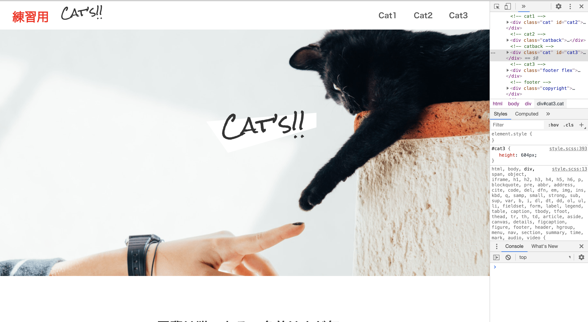

Why Web Design.〜「好き！」「楽しい！」を仕事にしたい〜
普段よくみるWebページや電車内の広告など、世の中に溢れているデザインを見ているうちに、
「モノ」や「コト」の伝え方は様々あることに気づき、そこに面白みを感じるようになりました。
そこからwebデザインやフロントエンドの勉強をしていくにつれて、その奥深さや面白さを
より強く感じるようになりました。
自分が「好きだ!」「楽しい!」と思えることを仕事にし、
その好きな事を通じて人の役に立てたら幸せだと思うようになったのがきっかけです。
My Good Point.〜Emoto Syomaのおすすめポイント〜
- 「人が喜ぶ顔を見るのが大好き！」
人の笑顔を見ると幸せを感じます。
相手がどうしたら喜ぶか、いつも考えています。 - 「超ポジティブ思考！」
出来ないと思う前にとりあえずやってみる！そうすればなんとかなる！
そんな気持ちをいつも大事にしています。
どんなことでもやってみなければ分からない。 - 「成長意欲が物凄く高い」
出来なかったことができるようになった喜びはなんとも言えない！
自分自身の成長に対するモチベーションがとても高いです。
毎晩の楽しみは、技術系のYouTube動画を見ること。 - 「好奇心旺盛」
このデザインの意図は？どういう技術を使えば実現できる？
そうやって考えたり、Webで調べたり、参考書を読むことが大好きです。
本屋さんの参考書コーナーに立ち寄ると、あっという間に時間が過ぎてしまいます...。 - 「目標達成意識が高い」
一度やると決めた目標は最後までやり遂げる性格です。
日々の勉強や資格取得など、途中で投げ出すことは絶対にしません。 - 「いつも自然体」
よく人から「いつも穏やかだよね」と言われます。
その穏やかさで周囲に癒しを与えます。
インターンシップ先の方から「マイナスイオンを感じる」と言われたことも。
My Hobby.〜Emoto Syomaの趣味〜

珈琲を淹れる
高校生の時、先生がサイフォンで淹れてくれた珈琲を飲み、その味に感動。
その感動をもう一度味わいたく、珈琲の淹れ方を日々研究をしています。
老後の夢は喫茶店を開き、お客さんに珈琲で感動を与えることです。
雑貨屋さんや家具屋さんを散策
好きな雰囲気の雑貨や家具に囲まれていると幸せを感じます。
日々のリフレッシュに雑貨屋さんは欠かせません。
一番好きなお店は無印良品！
街中の喫茶店めぐり
こじんまりとした喫茶店で珈琲を飲むのが好きです。
そのお店独特の雰囲気があったり独自のブレンドが
あったりと、発見が多いのがとても楽しいです。
お店の人と会話をしながら珈琲を飲めるのも喫茶店
の魅力の一つです。
旅行に行く
無類の温泉好きで、連休に友人と温泉旅行に行ったり、食べ歩き旅行をします。
今の時期は旅行にいけないため、かなりうずうずしています。
草津温泉にいけば、日本３大温泉コンプリート。

How to learn.〜日々の勉強法〜
- ●バナートレース
~目的~
Photoshopやillustratorなどのソフトに慣れる
デザインの引き出しを増やす


- ●デザインレビュー
~目的~
デザインの引き出しを増やす
短時間でたくさんのデザインに触れる


- ●コーディング
~目的~
アウトプットで学習の効率化
コーディング速度の向上を図る
JavaScriptの習得
※画像をクリックすると実際のページに飛びます

※参考デザインURL
https://note.com/chizumi_/n/n43e918e99656